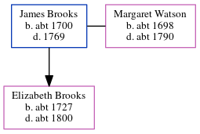

James Brooks c1700 - 1769
[ Home ] | [ Calendar ] | [ Surnames Index ] | [ Census Index ] | [ Family History ]James Brooks, the 6 times great-grandfather of Nigel Horne, was born in Womenswold, Kent, England c. 1700 and married Margaret Watson (with whom he had 1 child, Elizabeth) in Nonnington, Kent, England1.
He died in 1769.
Children
- Elizabeth was born c. 1727
Citations
- England, Select Marriages, 1538–1973 Ancestry.com Operations, Inc.
Notes
www.genesreunited.co.uk.
Media
Kent, East Kent marriage index 1538-1754 Transcription - GBPRS-EASTKENT-MAR-165407-2
Family Tree
Generated by ged2site. Last updated on Jun 11, 2024